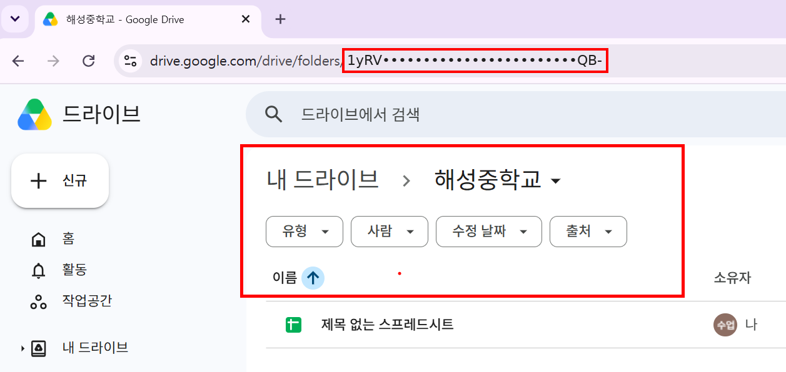
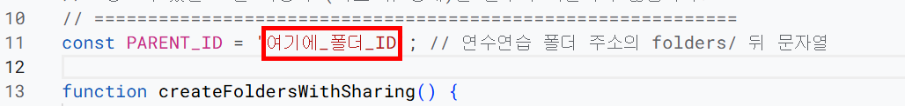
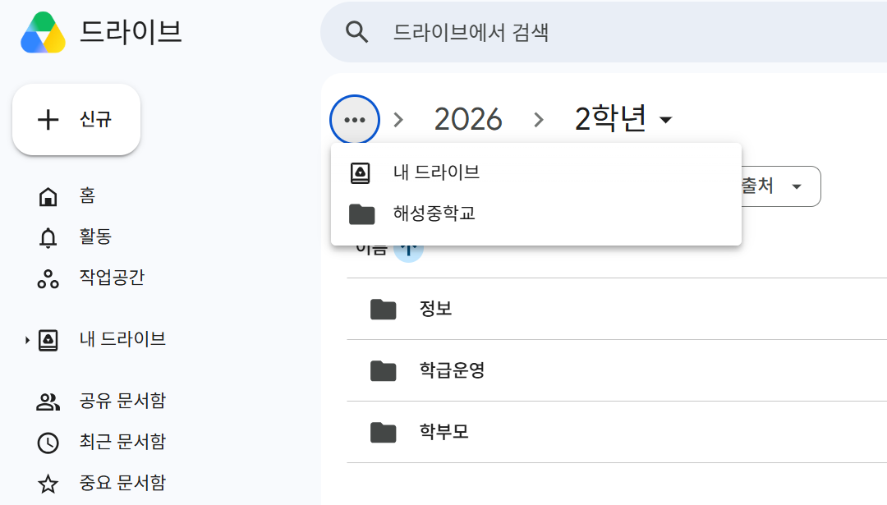

드라이브·공유
폴더를 먼저 설계하고, 공유 권한을 정리합니다
이 모듈의 흐름은 두 단계입니다: ① AI와 함께 폴더 구조와 이름 규칙을 정한다 → ② 공유 권한은 교사가 직접 하나씩 바꿔 보며 확인한다.
시작하기 전에
- 학교 구글 계정으로 로그인한 크롬
- 연습용 빈 폴더
연수연습— 모든 실습은 이 폴더 안에서 합니다 - 공유 실습을 함께 할 동료 1명
1 전체 흐름 한눈에 보기
실선 박스는 오늘 실습하는 단계, 점선 박스는 선택 단계입니다.
- 1 · AI폴더 구조안 받기
- 2 · AI이름 규칙 정리
- 3 · 직접폴더 만들기
- 선택 · AI 코드스크립트로 한 번에
- 4 · 직접공유 권한 확인
1 사례 1. 학년·반·교과별 폴더 구조와 공유 권한 설계
🤖 방법 A · AI에게 시키기 추천
- Gemini 앱에 아래 요청을 붙여넣어 폴더 구조안을 표로 받습니다.
- 받은 표에서 내 상황에 맞지 않는 폴더를 지우고, "폴더 이름 규칙을
연도_학년_교과_용도로 통일해서 최종 목록만 다시 보여 줘"라고 이어서 요청합니다. 연수연습폴더 안에서새로 만들기 → 새 폴더로 폴더를 만듭니다.- (선택) 폴더가 많으면 아래 Apps Script로 한 번에 만듭니다.
나는 중학교 2학년 담임이면서 정보 교과를 가르치는 교사입니다. 1년 동안 학급 운영 자료, 교과 수업자료, 수행평가 제출물, 학부모 안내문을 구글 드라이브에 정리하려고 합니다. - 최상위 폴더 7개 이내, 하위는 2단계까지 - 폴더 이름 규칙(연도_학년_교과_용도)과 예시 5개 - 어떤 폴더는 학생과 공유하고 어떤 폴더는 나만 보는지 표로 정리 표로 출력해 주세요.
(선택) 스크립트로 하위 폴더와 공유 권한을 한 번에 설정하기
시트 A열에 >로 단계를 나눈 폴더 경로를, B열에 공유 권한을 적으면 스크립트가 하위 폴더까지 만들고 권한을 설정합니다. 결과는 C열에 적힙니다.
| B열에 쓰는 값 (대상:권한) | 설정되는 권한 |
|---|---|
(빈칸), 나만 | 일반 액세스 제한됨(나만). 직접 추가해 둔 사람은 지우지 않습니다. |
교사:보기, 교사만, 교사만 보기, 교사:편집 | 교사 그룹에 보기 / 편집. 스크립트의 GROUPS에 교사 그룹 메일이 없으면 나만(제한됨) |
학생:보기 / 학생:쓰기 | 학생 그룹에 보기 / 편집. 그룹 메일이 없으면 건너뜀 |
2학년:보기, 2-3반:쓰기 등 | GROUPS에 적어 둔 학년·반 그룹에 그 권한. 이름은 자유롭게 더할 수 있음 |
학교:보기 / 학교:댓글 / 학교:편집 | 링크가 있는 학교 계정 사용자 전체에게 뷰어 / 댓글 작성자 / 편집자 |
메일주소:보기 / 메일주소:편집 | 그 사람(또는 그룹)만 뷰어 / 편집자로 추가. 학교 밖 구글 계정도 됩니다. |
공개:보기, 링크가 있는 모든 사용자 | ⚠ 학교 밖 공개: 링크를 받은 누구나(로그인 없이도) 보기. 공개:편집도 됩니다. |
| 여러 개 | 쉼표로 구분합니다. 예: 2학년:보기, 교사:편집 |
권한 낱말은 비슷한 말도 알아듣습니다: 보기 = 뷰어·읽기, 댓글 = 댓글 작성자, 편집 = 편집자·쓰기·수정. 그룹에는 보기·편집만 줄 수 있습니다. 권한은 경로의 마지막 폴더에만 설정되고, 중간 단계 폴더(예: 2026, 2학년)는 제한됨으로 둡니다. 알 수 없는 값은 건너뛰고 C열에 적습니다.
teachers@, students@, grade2@)을 만들어 두고, 스크립트 맨 위 GROUPS에 그 메일을 적습니다.
- 그룹 구성원만 바꾸면 전입·전출이 있어도 폴더 공유를 다시 할 필요가 없습니다.
- Education Standard·Plus 등 일부 에디션은 조직 단위를 조건으로 구성원을 자동으로 채우는 동적 그룹을 쓸 수 있습니다(공식 도움말 기준, 학교 관리 콘솔에서 확인). 무료 에디션(Fundamentals)은 관리자가 구성원을 넣어야 하며, CSV로 한꺼번에 넣을 수 있습니다.
- 그룹 메일을 모르면 학교 구글 계정 관리 담당자에게 "교사·학생·학년별 구글 그룹 메일 주소"를 물어보세요.
교사만은 교사 그룹 전체를 뜻합니다. 채점·업무처럼 나 혼자 볼 폴더는나만(또는 빈칸)으로 씁니다.학교:…는 학교 계정 전체(교사와 학생 모두)에게 열립니다. 학생에게만 주려면학생:…을 씁니다.- 학교 밖 공개와 학교 밖 계정은 학교 관리자가 막아 두었으면 실패하고, 그 이유가 C열에 적힙니다. 학생 명단·성적·사진이 든 폴더에는 쓰지 않습니다.
- 새 스프레드시트에서
파일 → 가져오기로folder-list.csv를 엽니다. A열은 경로, B열은 공유 권한입니다. 오른쪽 E~F열에 B열에 쓰는 값 안내 표가 들어 있으니 보면서 바꾸세요. 스크립트는 A·B열만 읽으므로 안내 표는 그대로 두거나 지워도 됩니다. 연수연습폴더를 열고 주소창의folders/뒤 문자열(폴더 ID)을 복사합니다.
해성중학교' 경로도 빨간 상자로 표시되어 있다.">위쪽 빨간 상자: folders/뒤 문자열이 폴더 ID입니다(그림에서는 일부를 가렸습니다). 아래쪽 빨간 상자: 지금 열린 폴더 이름을 확인하는 곳으로, 실습에서는연수연습이 보여야 합니다. 주소 끝에?가 붙어 있으면 그 앞까지만 복사합니다. 그림을 누르면 크게 볼 수 있습니다.- 시트에서
확장 프로그램 → Apps Script를 열고 기존 내용을 지운 뒤 아래 코드를 붙여넣습니다. 맨 위여기에_폴더_ID를 바꿉니다. 그 아래GROUPS에 교사·학생·학년·반 구글 그룹 메일을 적습니다. 모르는 그룹은 비워 두면 됩니다.
빨간 상자 안의 여기에_폴더_ID만 지우고 2단계에서 복사한 폴더 ID를 붙여넣습니다. 앞뒤 작은따옴표(')와 끝의;는 지우지 않습니다. 예:const PARENT_ID = '1yRV…QB-'; - 저장 후 함수
createFoldersWithSharing를 선택하고 실행을 누릅니다. 처음에는 권한 승인 화면이 나옵니다. - 시트 C열의 결과(
만듦 · 학교 보기,이미 있음 · 제한됨등)와 드라이브의 실제 공유 설정을 한두 개 열어 대조합니다.
실행 결과: 연수연습(그림에서는 해성중학교) →2026→2학년아래에정보·학급운영·학부모폴더가 만들어졌습니다. 경로가 길면 위쪽 점 세 개(•••) 버튼을 눌러 상위 폴더를 볼 수 있습니다. 공유 권한은 각 마지막 폴더(예:학급운영 → 공지)를 마우스 오른쪽 버튼으로 눌러공유에서 확인합니다.
// ============================================================
// 시트의 A열 경로대로 폴더를 만들고, B열 값대로 공유 권한을 설정합니다.
// A열: 폴더 경로. ">"로 단계를 나눕니다. 예) 2026>2학년>정보>수업자료
// B열: 공유 권한. "대상:권한" 형식. 여러 개는 쉼표(,)로 구분합니다.
// 대상: 나만(빈칸) / 아래 GROUPS의 이름(교사·학생·2학년·2-3반 …) / 학교 / 공개(링크가 있는 모든 사용자) / 메일주소
// 권한: 보기(뷰어·읽기) / 댓글(댓글 작성자) / 편집(편집자·쓰기·수정)
// 예) 나만, 교사:보기, 학생:쓰기, 2-3반:편집, 학교:보기, 공개:보기, abcd@gmail.com:편집자
// C열: 실행 결과를 적습니다.
// ============================================================
const PARENT_ID = '여기에_폴더_ID'; // 연수연습 폴더 주소의 folders/ 뒤 문자열
// B열에 쓸 이름과 구글 그룹 메일을 짝지어 적습니다. (그룹은 학교 관리자가 만듭니다)
// 줄을 더하거나 지워도 됩니다. 그룹 메일을 비워 둔 이름은 아래처럼 처리합니다.
// 교사: 비워 두면 나만 보기(제한됨) / 그 밖의 이름: 비워 두면 건너뜀
// '교사만'은 교사 그룹을 뜻합니다. 나 혼자만 볼 폴더는 '나만'이라고 쓰세요.
const GROUPS = {
'교사': '', // 예) teachers@학교도메인
'학생': '', // 예) students@학교도메인
'2학년': '', // 예) grade2@학교도메인
'2-3반': '', // 예) class2-3@학교도메인
};
function createFoldersWithSharing() {
const parent = DriveApp.getFolderById(PARENT_ID);
const sheet = SpreadsheetApp.getActiveSheet();
const lastRow = sheet.getLastRow();
if (lastRow < 2) return; // 경로가 없으면 끝냅니다
const myDomain = Session.getEffectiveUser().getEmail().split('@')[1].toLowerCase();
const rows = sheet.getRange(2, 1, lastRow - 1, 2).getValues();
const sharedPaths = {}; // 경로 → 나 말고 다른 사람에게 공유했는지
const results = rows.map(function (row) {
const parts = splitPath(row[0]);
if (parts.length === 0) return [''];
try {
// 1) 경로를 한 단계씩 따라가며, 없는 폴더만 새로 만듭니다
let folder = parent;
let created = false;
parts.forEach(function (name) {
const found = findChildFolder(folder, name);
if (found) {
folder = found;
} else {
folder = folder.createFolder(name);
created = true;
}
});
// 2) 마지막 폴더에만 B열의 공유 권한을 적용합니다
const sharing = applySharing(folder, String(row[1]), myDomain);
sharedPaths[parts.join('>')] = sharing.shared;
return [(created ? '만듦' : '이미 있음') + ' · ' + sharing.text];
} catch (e) {
return ['오류: ' + e.message];
}
});
// 3) 나만 보는 폴더가 공유된 상위 폴더 안에 있으면 경고를 붙입니다
rows.forEach(function (row, i) {
const parts = splitPath(row[0]);
const key = parts.join('>');
if (!(key in sharedPaths) || sharedPaths[key]) return;
for (let n = parts.length - 1; n > 0; n--) {
if (sharedPaths[parts.slice(0, n).join('>')]) {
results[i][0] += ' ⚠ 상위 폴더 ' + parts.slice(0, n).join('>') + '의 공유가 이 폴더에도 적용될 수 있습니다';
break;
}
}
});
sheet.getRange(1, 3).setValue('결과');
sheet.getRange(2, 3, results.length, 1).setValues(results);
SpreadsheetApp.getActive().toast('완료: C열 결과를 확인하세요.');
}
// "2026 > 2학년 > 정보" → ['2026', '2학년', '정보']
function splitPath(value) {
return String(value).split('>')
.map(function (s) { return s.trim(); })
.filter(function (s) { return s !== ''; });
}
// 휴지통에 없는, 같은 이름의 하위 폴더를 찾습니다. 없으면 null
function findChildFolder(folder, name) {
const it = folder.getFoldersByName(name);
while (it.hasNext()) {
const f = it.next();
if (!f.isTrashed()) return f;
}
return null;
}
// 권한 낱말을 보기 / 댓글 / 편집 중 하나로 맞춥니다. 모르는 말이면 ''
function normalizeRole(word) {
const w = word.replace(/\s/g, '');
if (['보기', '뷰어', '읽기', '보기만'].indexOf(w) !== -1) return '보기';
if (['댓글', '댓글작성자', '댓글달기'].indexOf(w) !== -1) return '댓글';
if (['편집', '편집자', '쓰기', '수정'].indexOf(w) !== -1) return '편집';
return '';
}
// 대상 낱말을 GROUPS의 이름 / 학교 / 공개 / 메일주소 중 하나로 맞춥니다. 모르는 말이면 ''
function normalizeTarget(word) {
const w = word.replace(/\s/g, '');
if (w.indexOf('@') > 0) return word.trim();
if (['나만', '나', '본인'].indexOf(w) !== -1) return '나만';
if (w === '교사만') return '교사';
if (['학교', '학교사용자'].indexOf(w) !== -1) return '학교';
if (['공개', '전체', '전체공개', '링크가있는모든사용자', '모든사용자'].indexOf(w) !== -1) return '공개';
const names = Object.keys(GROUPS);
for (let i = 0; i < names.length; i++) {
if (names[i].replace(/\s/g, '') === w) return names[i];
}
if (w === '교사') return '교사'; // GROUPS에서 지웠어도 교사는 나만 보기로 처리합니다
return '';
}
// B열 한 칸("교사:보기" 또는 "교사만 보기" 같은 말)을 대상·권한으로 나눕니다
function parseItem(item) {
const pos = item.lastIndexOf(':');
if (pos > 0) {
return { target: normalizeTarget(item.slice(0, pos)), role: normalizeRole(item.slice(pos + 1)) };
}
// 쌍점이 없을 때: "교사만", "교사만 보기", "링크가 있는 모든 사용자" 등
const w = item.replace(/\s/g, '');
const roles = ['댓글작성자', '편집자', '보기만', '보기', '뷰어', '읽기', '댓글', '편집', '쓰기', '수정'];
for (let i = 0; i < roles.length; i++) {
if (w.length > roles[i].length && w.slice(-roles[i].length) === roles[i]) {
return { target: normalizeTarget(w.slice(0, -roles[i].length)), role: normalizeRole(roles[i]) };
}
}
return { target: normalizeTarget(w), role: '보기' }; // 권한을 안 쓰면 보기로 봅니다
}
// B열 값을 읽어 공유 권한을 설정하고, 결과 문장을 돌려줍니다
function applySharing(folder, spec, myDomain) {
const items = spec.split(',')
.map(function (s) { return s.trim(); })
.filter(function (s) { return s !== ''; });
if (items.length === 0) items.push('나만');
const perms = { '보기': DriveApp.Permission.VIEW, '댓글': DriveApp.Permission.COMMENT, '편집': DriveApp.Permission.EDIT };
const done = [];
let shared = false;
items.forEach(function (item) {
const p = parseItem(item);
if (!p.target || !p.role) {
done.push('"' + item + '" 건너뜀(알 수 없는 값)');
return;
}
try {
if (p.target === '나만' || (p.target === '교사' && !GROUPS['교사'])) {
// 일반 액세스만 '제한됨'으로 바꿉니다(교사 그룹이 없을 때의 '교사'도 같음). 직접 추가한 사람은 지우지 않습니다
folder.setSharing(DriveApp.Access.PRIVATE, DriveApp.Permission.NONE);
done.push('제한됨(나만)');
} else if (p.target in GROUPS) {
const group = GROUPS[p.target];
if (!group) {
done.push(p.target + ' 건너뜀(GROUPS에 그룹 메일이 없음)');
} else if (p.role === '댓글') {
done.push(p.target + ' 건너뜀(폴더는 그룹별 댓글 권한을 줄 수 없어 보기 또는 편집으로)');
} else {
if (p.role === '편집') folder.addEditor(group); else folder.addViewer(group);
done.push(p.target + ' 그룹(' + group + ') ' + p.role);
shared = true;
}
} else if (p.target === '학교') {
folder.setSharing(DriveApp.Access.DOMAIN_WITH_LINK, perms[p.role]);
done.push('학교 ' + p.role);
shared = true;
} else if (p.target === '공개') {
folder.setSharing(DriveApp.Access.ANYONE_WITH_LINK, perms[p.role]);
done.push('⚠ 학교 밖 공개 ' + p.role);
shared = true;
} else { // 메일주소
const outside = p.target.split('@')[1].toLowerCase() !== myDomain;
if (p.role === '댓글') {
done.push(p.target + ' 건너뜀(폴더는 사람별 댓글 권한을 줄 수 없어 보기 또는 편집으로)');
return;
}
if (p.role === '편집') folder.addEditor(p.target); else folder.addViewer(p.target);
done.push(p.target + ' ' + p.role + (outside ? '(학교 밖 계정)' : ''));
shared = true;
}
} catch (e) {
done.push('"' + item + '" 실패: ' + e.message); // 학교 정책으로 막힌 경우 등
}
});
return { text: done.join(', '), shared: shared };
}
이 코드는 가상 드라이브(모의 환경)로 폴더 만들기·권한 설정 순서를 확인했고, 학교 계정에서 실행해 하위 폴더가 만들어지는 것을 확인했습니다(위 그림). 공유 권한이 실제로 설정되는지는 아직 확인하지 못했습니다. 연수 전 강사가 빈 연습 폴더에서 직접 실행해 검증한 뒤 쓰세요. 같은 시트로 다시 실행해도 폴더가 두 번 생기지 않습니다. 직접 만들고 싶다면 Gemini 앱에 "시트 A열의 경로를 > 기준으로 나눠 하위 폴더를 만들고, B열 값(나만 / 교사:보기 / 학생:쓰기 / 2-3반:보기 / 학교:보기 / 메일주소:편집, 교사·학생·반 이름은 스크립트 맨 위에 적은 구글 그룹 메일로 바꿔서)대로 공유 권한을 설정하는 Apps Script를 한국어 주석과 함께 만들어 줘. 같은 이름 폴더가 있으면 다시 만들지 말고, 줄마다 결과를 C열에 적어 줘."라고 요청합니다.
학급운영을 학교:보기로 두면 그 안의 업무(교사만)도 학교 사용자에게 보일 수 있습니다. 스크립트는 이런 줄의 C열에 ⚠ 경고를 붙입니다. 교사 전용 폴더는 공유하지 않는 상위 폴더 아래에 두세요. 메일주소로 사람을 추가하면 그 사람에게 공유 알림 메일이 갈 수 있습니다.⌨️ 방법 B · 직접 하기
연수연습폴더 안에서새로 만들기 → 새 폴더를 누릅니다.- 이름 규칙(예:
2026_2학년_정보_수행평가)대로 폴더를 하나씩 만듭니다. - 교사만 보는 폴더는 이름 끝에
(교사만)을 붙여 두면 실수로 공유하는 일을 줄일 수 있습니다.
- AI가 편의를 위해 "링크가 있는 모든 사용자에게 공유"를 권하는 경우가 있습니다. 표의 공유 범위를 항상 제한됨 또는 학교 도메인 한정으로 고쳐 봅니다.
- AI가 만든 폴더 이름에 학생 이름이 들어가는 구조(예: 학생별 폴더 이름=실명)는 번호로 바꿉니다.
- 스크립트는 빈 연습 폴더에서 먼저 실행해, 다른 폴더에 만들어지지 않는지 확인합니다.
- 교과협의회 공유 드라이브(협의록·평가 계획·문항 검토 폴더)
- 담임 인수인계 폴더(개인정보 없는 학급 운영 자료만)
- 학년 업무 폴더(행사·안내문·양식)
- 동아리 활동 폴더(학생 편집 폴더와 교사 전용 폴더 분리)
- 수업 공개·장학 자료 폴더(교사 간 보기 권한)
잘 안 될 때
| 이런 증상이면 | 이렇게 해 보세요 |
|---|---|
| 동료가 "액세스 권한 필요" 화면을 봄 | 공유 목록에 동료의 학교 계정이 들어갔는지 확인합니다. 개인 계정으로 열면 막힙니다. |
C열에 오류:가 적힘 | 그 줄만 실패한 것입니다. 오류 문구를 Gemini 앱에 붙여넣어 원인을 묻습니다. 학교:댓글에서 오류가 나면 학교 설정상 폴더에 댓글 권한을 줄 수 없는 경우이니 학교:보기로 바꿉니다. |
C열에 GROUPS에 그룹 메일이 없음 | 스크립트 맨 위 GROUPS에서 그 이름 옆 따옴표 안에 그룹 메일을 적고 다시 실행합니다. 이미 만든 폴더는 다시 만들지 않고 권한만 설정합니다. |
C열에 실패: Access denied 같은 문구 | 학교 관리자가 학교 밖 공개나 학교 밖 계정 공유를 막아 둔 경우입니다. 학교 정책이므로 학교:보기나 학교 계정으로 바꿉니다. |
| 폴더가 엉뚱한 이름으로 따로 생김 | A열에서 > 대신 _나 다른 기호를 쓴 줄이 있는지 봅니다. 예: 2026>2학년_정보>수업자료는 2학년_정보라는 폴더를 따로 만듭니다. |
| "링크가 있는 모든 사용자"가 보이지 않음 | 관리자가 외부 공유를 제한한 경우입니다. 학교 정책이므로 그대로 둡니다. |
| 스크립트 실행 시 "Exception: ... 찾을 수 없습니다" 같은 오류 | 폴더 ID를 다시 복사합니다. folders/ 뒤 문자열만, 물음표(?) 앞까지입니다. 오류 문구를 Gemini 앱에 붙여넣어 원인을 물어도 됩니다. |
| 권한 승인 화면에 "확인되지 않은 앱" 경고 | 본인이 직접 붙여넣은 코드인지 확인한 뒤에만 진행합니다. 출처를 모르는 코드라면 중단합니다. |
더 알아보기
- 구글 Drive 도움말: support.google.com/drive (파일 공유 관련 문서)
- 학교 현장 점검표의 공유 설정 점검 7항목